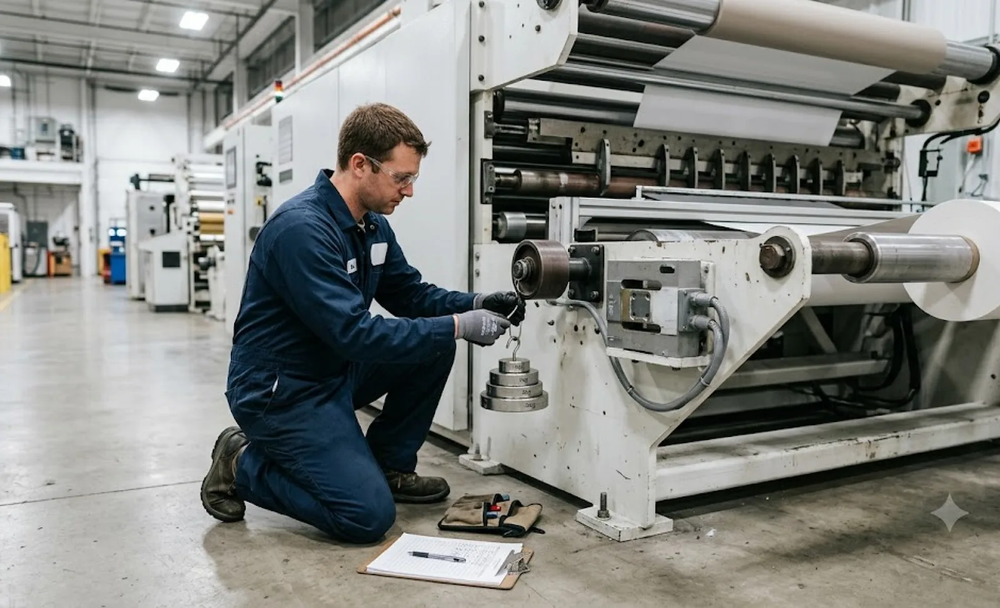
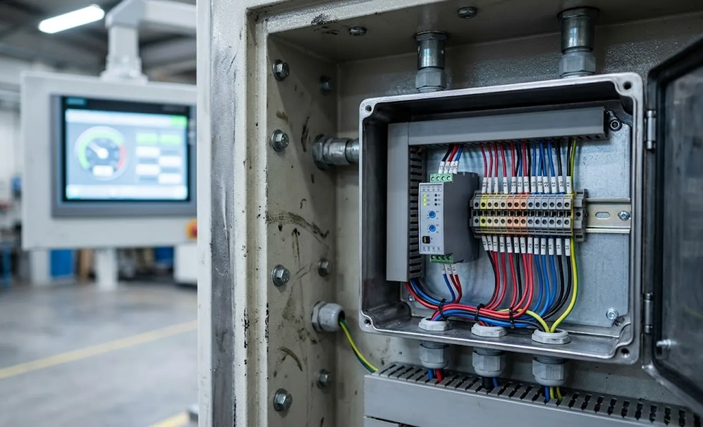

Published October 9, 2026 | By HDPTH Technical Editorial Team

A slitter rewinder that displays 50 N of web tension may actually be pulling 62 N — or only 38. Operators tune machines around the display, recipes copy its numbers shift to shift, and winding quality follows the screen. Over months of service, load cells drift, dancer mechanisms wear and signal chains lose accuracy, yet the display still shows a confident value with no visible warning. Tension calibration is the discipline of proving that displayed values match reality, and it is one of the cheapest quality investments a converting plant can make. This guide explains what drifts, how to verify it, and what to demand from a supplier before and after delivery.
Why tension accuracy drifts
The measurement chain contains more failure points than most buyers expect. Load cells accumulate zero offset from temperature swings, mounting stress and overload events; amplifiers age; connectors corrode in humid plants. Dancer systems degrade mechanically — pivot bearings stiffen, counterweights shift, position transducers lose range. Indirect systems that infer tension from motor torque or unwind brake current drift as gear efficiency and bearing friction change with wear. None of these failures announces itself; the first symptom is usually a slow rise in winding defects nobody can attribute. Machines designed for elastic web tension control suffer most, because their setpoints sit where small errors matter.
Load cell verification: zero and span
The working standard is simple and belongs in your maintenance plan. At standstill with no web, the display must read exactly zero; a static offset points to sensor drift or mechanical preload on the sensing roller. Span is verified by applying a known force — calibrated weights hung from the sensing roller at its true wrap angle — and comparing the displayed tension against the applied value. Tolerances of ±1 % of full scale are typical for a healthy chain. Two details decide whether the check means anything: it must be performed at the wrap angle the machine actually uses, since sensitivity depends on geometry, and the signal chain should be warmed to production condition. Log every zero and span result; a creeping trend predicts failure before it ruins a batch.
Dancer and indirect tension systems
Dancers need mechanical verification before electrical: pivot friction, roller balance and the position transducer all shape the apparent tension, so sweep the full travel smoothly and confirm the stored position-to-tension mapping still matches the physics after any roller change. Indirect estimates — common on unwind brakes — should be compared against a direct measurement at intervals, because brake efficiency moves with pad wear and temperature. Whichever method your machine uses, treat a verified tension chain as an acceptance deliverable, exactly as the factory acceptance test checklist does, rather than as an assumption handed over at commissioning.

Proving the web feels what the screen says
Final verification is empirical. Compare displayed tension with measurable outcomes: roll hardness profiles (see our roll hardness testing guide), core crushing, and any tendency toward telescoping. For a direct check, portable strain measurement on the running web during a test run compares physical force against the display at production speed. When displayed and physical values diverge, calibrate the chain before touching the recipe. Plants that log calibration results alongside OEE and downtime data often find that “mystery” defect clusters coincide exactly with missed calibration intervals.
A calibration schedule that holds
| Check | What it proves | Typical interval |
|---|---|---|
| Zero check, no web | Sensor drift, mechanical preload | Weekly |
| Weighted span at real wrap angle | End-to-end chain accuracy under load | Monthly and after roller work |
| Dancer travel and pivot friction | Mechanical health of the dancer loop | Quarterly |
| Indirect vs direct comparison | Drift of torque- or brake-based estimates | Quarterly |
| Documentation review | Traceability of all calibration records | Annually |
Treat the intervals as starting points. Abrasive, hygroscopic or high-temperature webs push them shorter; a stable film line running one recipe may stretch them. What never stretches is the record-keeping: an undocumented check is indistinguishable from no check when a customer asks why a lot wound differently.
What to demand at FAT and SAT
Calibration support is a purchase-decision item, not a service afterthought. At the factory acceptance test, require zero and span certificates for every load cell, the written verification procedure included in the machine documentation, and HMI screens that guide operators through the check without engineering software. At site acceptance, repeat the weighted-span check after rigging — installation loads change roller alignment and wrap geometry, as our rigging and installation guide explains. Finally, confirm that calibration events can be exported to your historian in the same way production values are; a measurement chain you can verify and trace is a measurement chain you can defend to any customer audit.
Specifying your next slitter rewinder?
Tell HDPTH your material, width and tension range. We deliver machines with in-place verification procedures, HMI-guided calibration menus and documented sensor certificates — a tension chain your team can check, log and defend from day one.
Submit Your Project InquiryFrequently asked questions
How often should slitter rewinder load cells be calibrated?
A weekly zero check and a monthly weighted span check suit most plants. Shorten the intervals for abrasive, hygroscopic or high-temperature materials, after any roller or sensor work, and whenever defect trends appear. The interval matters less than the record: log every result so drift becomes visible as a trend instead of a surprise.
What accuracy should a calibrated tension display meet?
Most load cell manufacturers specify ±1 percent of full scale after a proper span check; anything beyond ±2 percent starts to distort recipes and winding behaviour. The check must be done at the machine’s real wrap angle, because sensitivity depends on geometry, and with the signal chain warmed to production condition.
Can our own maintenance team calibrate tension sensors, or must the supplier come?
Your team can do it if the machine ships with the right support: a documented zero and span procedure, HMI screens that guide the check without engineering software, and mechanical access for hanging calibrated weights at the true wrap angle. Suppliers should train your staff at commissioning; calibration visits should be the exception, not the business model.
Why does our tension display read correctly at zero but winding quality is still poor?
Zero only proves the chain is balanced, not that it is accurate under load. A wrong span, an incorrect wrap-angle parameter, dancer pivot friction or a worn brake all leave the zero reading clean while loaded tension is off. Verify span with weights, then compare against physical outcomes such as roll hardness before adjusting recipes.
Should calibration records be part of the machine acceptance documentation?
Yes. Require zero and span certificates for every load cell at the factory acceptance test, a repeat weighted-span check at site acceptance after rigging, and the ability to export calibration events to your historian. Records tied to production data let you prove whether quality changes came from the web, the recipe or the measurement chain.